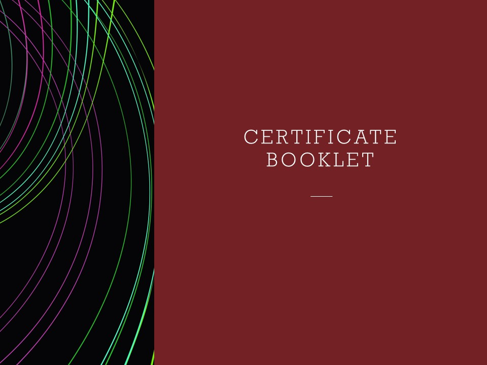
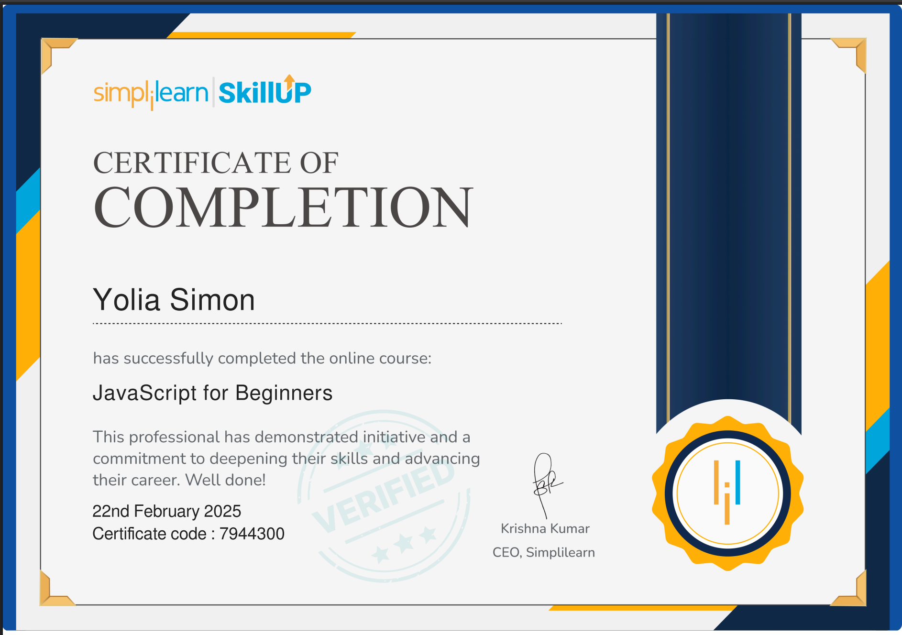
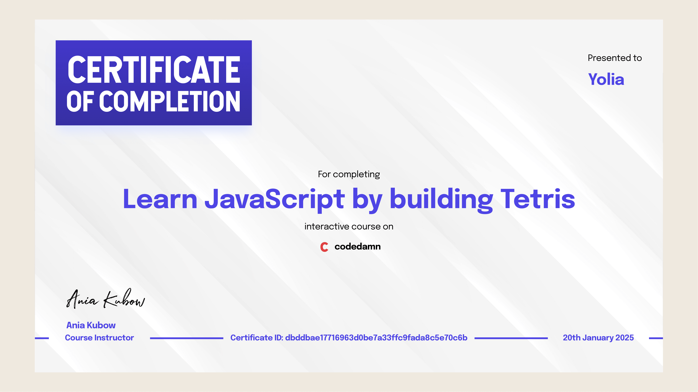
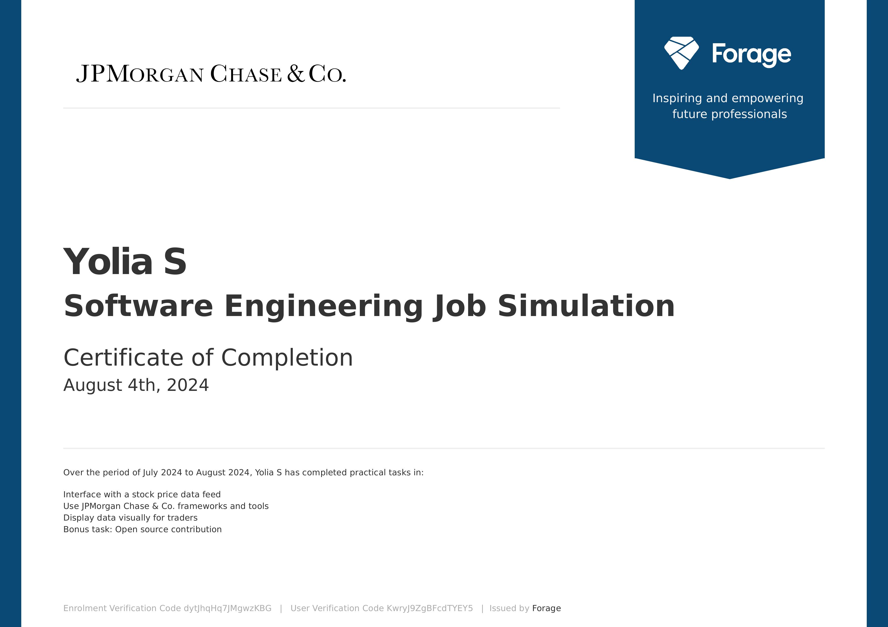

Projects and Achievements
I have built a stylised desktop application for rolling TTRPG (tabletop role-playing game) dice using JavaScript, Node.js, Electron, HTML, and CSS (a snippet of the interface can be viewed further down below). The idea was to create something fun and functional, with a clean interface and a bit of personality. However, as of now, I’m spending a lot of time improving my technical skills in JavaScript and Python. I’ve been working on a few web applications to get more hands-on experience with front-end development and building cross-platform desktop apps. It’s been a great way to learn how everything fits together—from layout and styling to interactivity and app structure. I’m also starting to explore some new frameworks such as Flask for Python and React Native for mobile applications.

This booklet showcases the technical I’ve developed. It highlights the initiative I took to gain experience when I wasn’t able to secure summer work placements or internships due to unfortunate personal circumstances.




